about me!
hello, my name is noelle or better known as ketkat online. im a trans girl who likes to draw sometimes! i dont really talk to people much but if you want to dm me, feel free to reach out on twitter or discord (@ketkatturnip), i wont bite ;3
my favourite Pokemon is meowscadra and lucario, they're so cute and awesome. i never beaten the games though but i did play pokemon black until i reached victory road. after that i kinda lost motivation and just forgot about the game lol
my intrest!
i dont really have any interest that stick into me that long. my interest on something just disappear after one month or one week. i do have a hyperfixation towards pokemon once though, that's probably my stronger interest yet.
these are things that i have interest in!
musix taste!
honestly i think my music taste is kinda everywhere, i just listen to what sounds good to me. here are my favourite artist!
 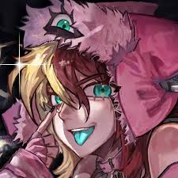
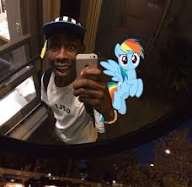
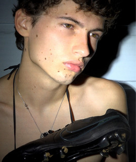
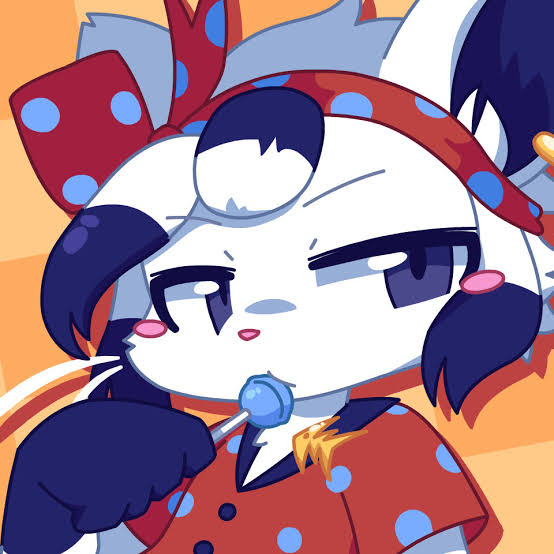
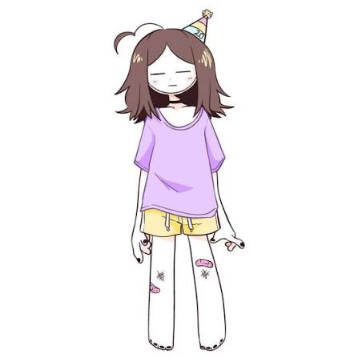
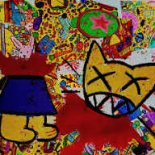
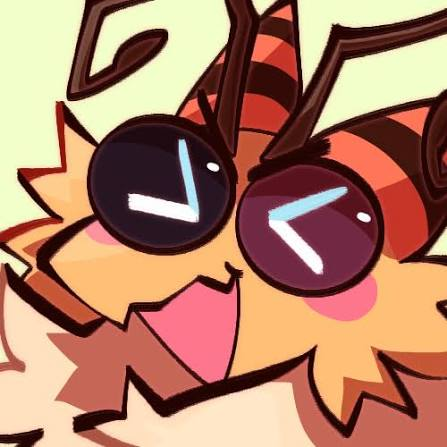
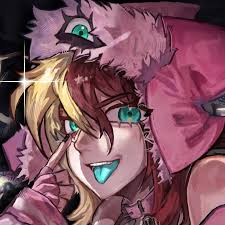
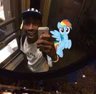
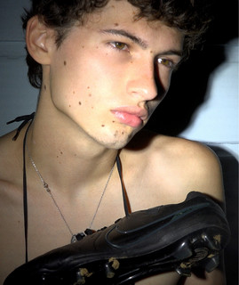
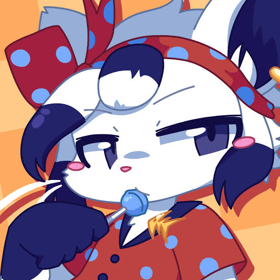
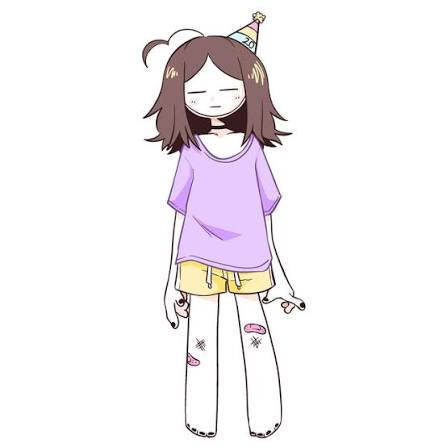
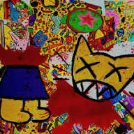
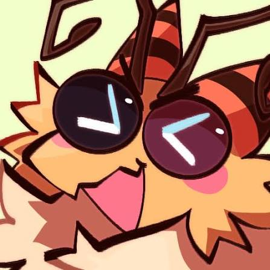